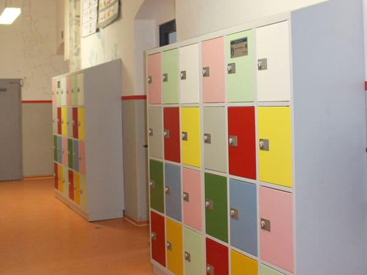

MINT mit Überzeugung
Mathematik, Informatik, Naturwissenschaft und Technik – mit Praktika, Robotik-AG, Experimenten und Projekten, die zeigen, wozu Wissen im echten Leben gut ist.
Im Herzen der Dresdner Neustadt verbindet die Semper Oberschule starken MINT-Unterricht mit Kunst, Musik und Theater – begleitet von Sozialarbeitern, Erziehern, Medienpädagogen und einer Praxisberaterin, die für jede Schülerin und jeden Schüler da sind.
UNESCO-Projektschule · MINT-freundliche Schule · Digitale Schule Sachsen · KlimaschuleKleine Klassen, echte Förderung und Räume, in denen Jugendliche sich ausprobieren können.
Mathematik, Informatik, Naturwissenschaft und Technik – mit Praktika, Robotik-AG, Experimenten und Projekten, die zeigen, wozu Wissen im echten Leben gut ist.
Schulkonzerte, Theaterabende und Kunstprojekte – Bühnenerfahrung stärkt Selbstvertrauen, Ausdruck und Gemeinschaft. Jedes Jahr ein großer Auftritt, den sich niemand entgehen lässt.
Mehrere Sozialarbeiter unterstützen im Schulalltag – bei Konflikten, im Mentoring, bei der Berufsorientierung oder wenn einfach jemand zuhören soll. Für Jugendliche und Eltern gleichermaßen erreichbar.


Als Ganztagsschule bieten wir einen strukturierten Tagesablauf: Unterricht, Mittagspause mit frischem Essen, Hausaufgabenzeit und AG-Angebote. Eltern wissen ihre Kinder in verlässlichem Rahmen – und Jugendliche haben Zeit für Projekte, Sport und Freundschaften.

Unser Imagefilm zeigt das Schulleben an der Jordanstraße: Menschen, Momente und ganz viel Neustadt. Eine Minute, die sich lohnt.
Der beste Beweis für eine Schule sind die Menschen, die sie jeden Tag besuchen.
„An meiner alten Schule war ich eine von 30. Hier kennt mich jeder Lehrer mit Namen – und fragt nach, wenn es mir nicht gut geht."– Beispielzitat (durch echte Schülerstimme ersetzen)
„Bei der Projektwoche haben wir in der MINT-Woche einen komplett neuen Code geschrieben. Das Gefühl, wenn er dann läuft – unschlagbar."– Beispielzitat (durch echte Schülerstimme ersetzen)
„Unser Theaterstück vor 200 Zuschauern war das Größte. Vorher hatte ich Horror, auf der Bühne zu stehen."– Beispielzitat (durch echte Schülerstimme ersetzen)
Lernen Sie uns persönlich kennen – telefonisch, per E-Mail oder bei einem Tag der offenen Tür.